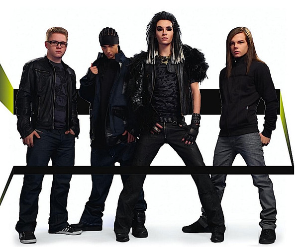
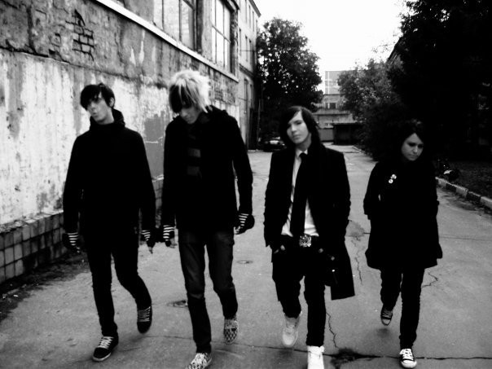

POP ROCK
El pop rock (también tipográfico como pop / rock) es música rock con un mayor énfasis en la composición profesional y en la grabación de canciones, y menos énfasis en la actitud. Originado a finales de la década de 1950 como una alternativa al rock and roll normal , el pop rock temprano estuvo influenciado por el ritmo , los arreglos y el estilo original del rock and roll (y, a veces, del doo-wop ). Puede verse como un campo de género distinto en lugar de música que se superpone con el pop y el rock. Los detractores del pop rock a menudo se burlan de él como un producto comercial elegante y menos auténtico que la música rock. Actualmente, el género Pop Rock utiliza la instrumentación y tecnología para la creación de sus temas, conserva su estructura «verso – estribillo – verso» ejecutando sus melodías de forma sencilla y pegadiza para que al público le sea mucho mas fácil recordar las letras y el ritmo lo lleve a escuchar la música una y otra vez. Las voces melódicas y claras en primer plano es lo que mas lo diferencia de otros géneros.
Artistas Musicales
Tokio Hotel
|  |
| Es una banda alemana de pop rock formada por Bill Kaulitz (voz), Tom Kaulitz (guitarra, teclados), Georg Listing (bajo, teclados) y Gustav Schäfer (batería). Su música abarca varios géneros desde una faceta comercial, lo que los relaciona con gente como Placebo. Tampoco es homogénea la estética del grupo, que va desde el estilo andrógino del cantante Bill Kaulitz (en 2009, actualmente tiene un estilo pop) a las nuevas corrientes del Visual kei, hasta la del guitarrista Tom Kaulitz, asociada a la cultura hip-hop. |
| 1000 Oceans (Album: Scream) |
Kit-i
|  |
| Fue una banda rusa de género emo, pop rock, que se formó en el año 2007. Saltaron a la fama con su canción «После дождя», publicada en 2009. El nombre está asociado con la estación de metro Kitay-Gorod donde se ubicó la primera base de ensayo del grupo. El primer sencillo del Kit-i "После дождя", publicado en 2009 y trae su inicio en el mundo de la música. Tras el éxito del primer sencillo, el segundo "Осень" fue lanzado casi un año después. Con la creciente popularidad de la banda su tercer sencillo "Выпускной" se publicó dos meses después TrynitiGab por Domini. |
| Осень (Album: Китай ~ Осень) |
Nico Collins
| Cantante y compositor famoso por el canal de YouTube que lleva su nombre. Ha alcanzado gran popularidad allí por lanzar sus sencillos originales y videos líricos junto a re-mezclas de populares sencillos. Ha conseguido más de 250.000 suscriptores en su canal de YouTube. También ha obtenido más de 140.000 seguidores en su cuenta de Instagram autotitulada. |
| I'm So Sorry |
Johnnie Guilbert
 |
| Johnnie Guilbert es un Vlogger, contenido de YouTubeCreador, cantante, compositor y actor. Johnnie sufría de dislexia aguda, una discapacidad de aprendizaje en niños que culmina en problemas con la lectura a pesar de la inteligencia normal. Los desafíos de la dislexia incluyen dificultades para deletrear palabras, leer rápidamente, escribir palabras, pronunciar palabras y comprender lo que se está leyendo. Esta condición médica llevó a Johnnie aDepresión y tendencias suicidas a la edad de 9 años, tomó Youtube como un escape de las realidades de su infancia. A menudo narra cómo solía ser intimidado por vestirse de manera diferente a otros niños. Llevaría sombreros y jeans ajustados a la escuela, luciendo diferente de todos en su grupo de compañeros. |
| Poison (Album: The Last Thing I Want Is Help) |